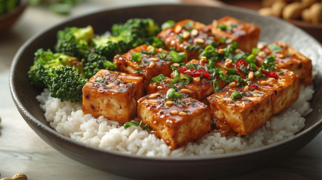

Tofu Rice Recipe

Simple Tofu Rice
A quick, comforting bowl of pan-fried tofu and steamed rice,
tossed together with soy sauce, garlic, and sesame oil.
Easy weeknight food that comes together in under
30 minutes.
Serves:2 Prep time:
10 minutes Cook time:20 minutes
Ingredients
- 1 cup jasmine or white rice, uncooked
- 1 block (400 g / 14 oz) firm tofu, drained and pressed
- 2 tbsp cornstarch
- 2 tbsp vegetable oil
- 2 garlic cloves, minced
- 2 tbsp soy sauce
- 1 tbsp sesame oil
- 1 tsp rice vinegar
- 1 tsp sugar
- 2 green onions, sliced
- 1 tsp sesame seeds, for garnish
Instructions
- Cook the rice.Rinse the rice until the
water runs clear, then cook according to package
directions. Set aside, covered, to keep warm.
- Prepare the tofu.Cut the pressed tofu
into bite-sized cubes and pat dry with a paper towel.
Toss the cubes in cornstarch until lightly coated all
over.
- Fry the tofu.Heat the vegetable oil
in a large skillet or wok over medium-high heat.
Add the tofu in a single layer and fry for 2–3 minutes
per side, until golden and crisp on all sides.
Remove and set aside.
- Make the sauce.In the same skillet,
lower the heat to medium and add the garlic, cooking
for about 30 seconds until fragrant. Stir in the soy
sauce, sesame oil, rice vinegar, and sugar, and let it
bubble for 30 seconds.
- Combine.Return the crispy tofu to the
skillet and toss to coat evenly in the sauce.
- Serve.Spoon the rice into bowls,
top with the glazed tofu, and finish with sliced green
onions and sesame seeds.
Notes
Pressing the tofu well before cooking is key to getting
it crispy — wrap it in a towel and set something heavy
on top for 15–20 minutes if you have time.
For extra veggies, stir in some steamed broccoli
or a handful of spinach at the end.